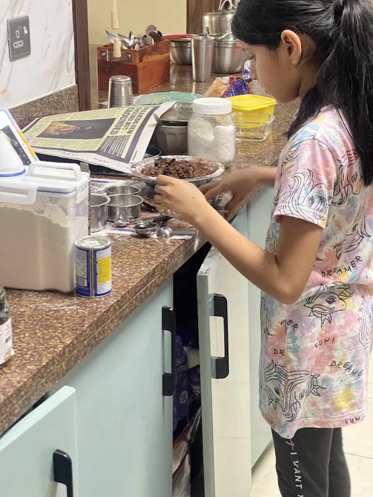
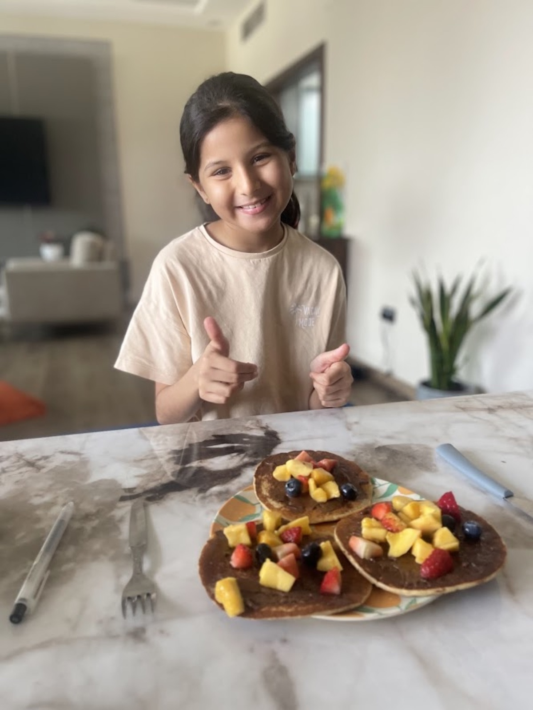
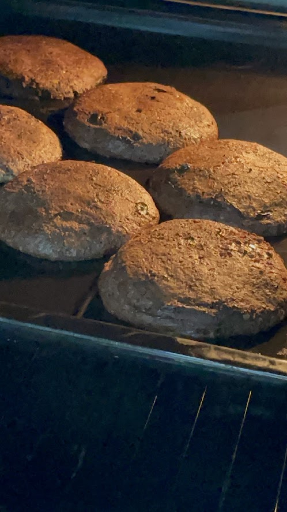
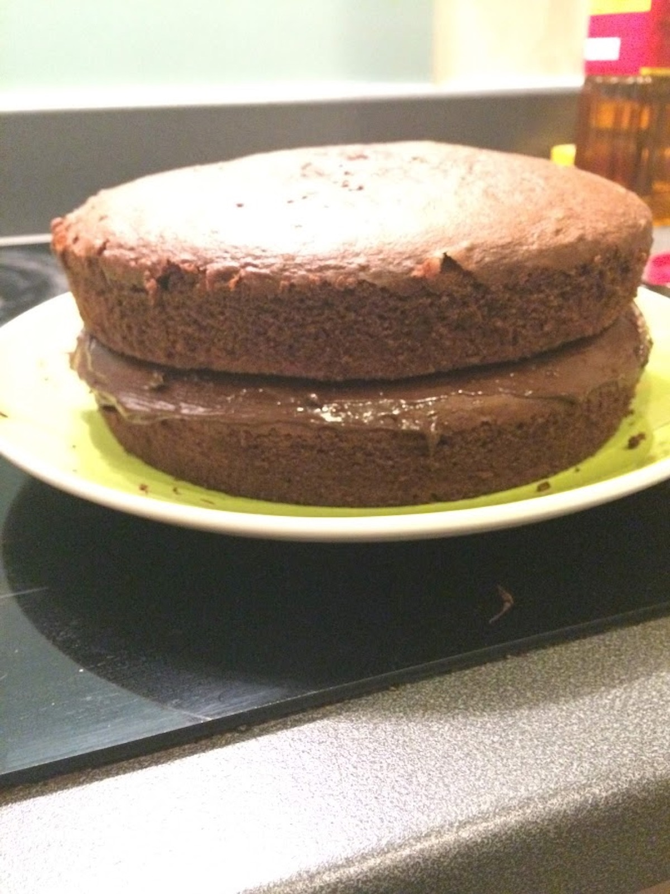
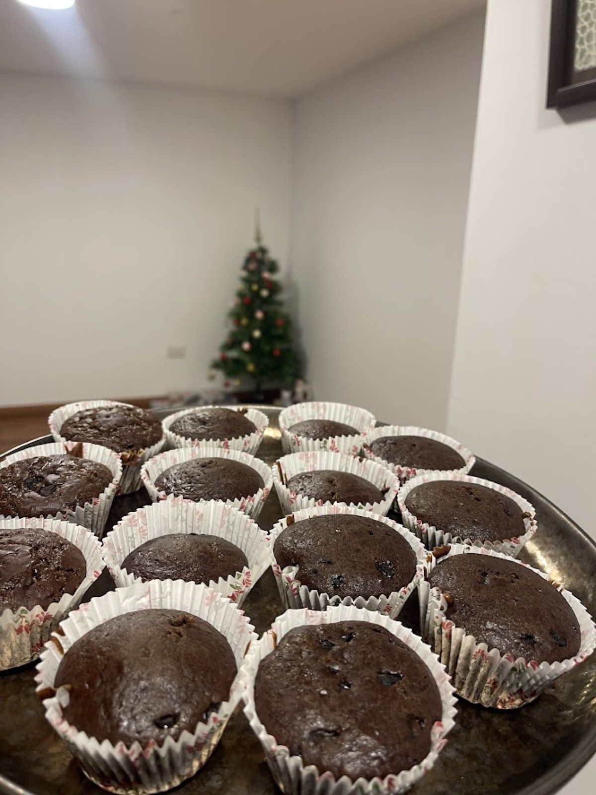

I didn't wake up one day and decide, okay, now I'm going to bake for other people instead of myself. It just kind of happened, one cake at a time, without me really noticing until I looked back at all of it together.
It started with my mum, actually.
The Sugar-Free Gift
My mum wasn't eating sugar for a while, and I remember thinking that felt so unfair. Everyone else gets cake when there's something to celebrate, and she was just supposed to sit there and watch? No thank you.

So I decided I'd figure it out myself.
The tricky part was that almost everything I knew about baking suddenly didn't apply. No eggs, no sugar — so what was even going to hold the cake together, and what was going to make it taste like something worth eating? I tried a few things before I landed on a cake made with dry fruits and nuts instead, with no sugar anywhere in it at all. It took some trial and error, and a couple of the early attempts were honestly a bit sad.
But then I got it right. And watching my mum eat a slice like it was any other cake, like she wasn't missing out on anything — that might be one of my favourite kitchen memories, actually. It taught me something I wasn't expecting a cake to teach me:
"Sometimes the best part of baking isn't even eating it yourself. It's watching someone else enjoy it."
That cake also got me curious about something I'd never really thought about before — dates.
Discovering the Date Cake
I used to think of dates as just, you know, a snack. Something you'd eat on their own, not something you'd bake with. But once I started using them in a cake instead of sugar, I couldn't believe how much they did. They're already so sweet and sticky, and they made the whole cake soft and moist without needing a single spoon of sugar.
I was pretty proud of that one. Not because it was complicated — it really wasn't — but because it worked without any shortcuts.
And that's when I started realising something: baking a recipe exactly the way it's written isn't always the point. Sometimes it's about figuring out how to make it work for whoever you're actually baking it for.
Not every bake needed a reason like that, though. Some mornings, it was just pancakes.
Pancakes for Happy Mornings

I piled a batch high with fresh mangoes, strawberries, and blueberries one morning, mostly because it looked really fun in my head and I wanted to see if it would look as fun on the plate. It did. Bright pink and orange and blue on top of golden pancakes — it turned a totally normal breakfast into something that felt a little bit like an occasion, even though nothing was actually being celebrated.
I think that's around when I started adding little things to recipes just because I wanted to, not because anyone told me to. A different fruit here, a swap there. Small stuff. But it made even the recipes I already knew feel a little more like mine each time.
Mama's Savior
That habit is basically how the almond cake happened.
I built it out of everything I'd already figured out with the sugar-free cake and the date cake — almonds instead of regular flour, dates instead of sugar, nothing that would leave my mum out of her own celebration again. The first version came out a bit dense, if I'm being honest, more like a brick than a cake. It took a few more tries to get it light.
But once I did, it became a cake. The one my mum actually asks for. Somewhere along the way it earned its own name — Mama's Savior — because it's the one I trust completely now, the one that's saved more than one celebration when nothing else felt like it would work.
Once I'd figured out how to bake with my mum in mind, it didn't feel like a big jump to start doing the same thing for my friends.
Baking for Friends
Some of my friends can't eat eggs, so I started figuring out eggless versions of things, so nobody had to get a smaller, sadder version while everyone else got the real thing. It meant trying new combinations and messing a few of them up along the way, which, honestly, was kind of fun too.
Baking for other people made me pay attention to stuff I'd never think about when I was only baking for myself. What do they actually like? What can they even eat? What would genuinely make them happy? Those questions started feeling just as important as the actual mixing and measuring.
And once I was already thinking about a specific person while I baked, it made sense to start bringing the cake to them instead of just waiting for them to come find it.
Birthday Deliveries
A homemade cake didn't have to just sit around at home anymore. I could pack it up, carry it somewhere, and hand it over as a surprise.
There's something really different about giving someone a cake you made yourself. They get to blow out their own candles. They get the first slice. And they get to hear, "I made this for you," instead of just guessing it came from a shop.
That part, honestly, is what made all the measuring and mixing and standing around waiting for the oven feel worth it in a totally different way than baking just for me ever did.
By that point in the year, this wasn't even a special thing anymore. It was just how I baked.
A Busy Kitchen

That August, my kitchen barely had a quiet week. I made classic chocolate cookies completely by myself, tried rolling cinnamon rolls for the first time ever — which were nowhere near perfect, but they were mine — upgraded to a double chocolate version once regular cookies started feeling too easy, and squeezed in one more batch of pancakes on top of everything else, just because I felt like it.
None of it felt like a big deal while I was doing it. But looking back at that whole month together, I can actually see how much had changed. I wasn't just learning how to bake things anymore. I was learning how to make my own things, for my own reasons.
That same feeling is exactly what made my mum's birthday feel like the biggest test of the whole year.
Mum's Birthday

Dropping chocolate into the batter — a completely homemade chocolate cake.
I went all out for that one. A rich, completely homemade chocolate cake, nothing bought, nothing shortcutted. I remember being more nervous about that cake than almost anything else I've ever baked, because this time it actually mattered whether it turned out right. It wasn't just a random weekend thing.
It came out close to perfect, and everyone loved it at the party. But honestly, what I remember most isn't even how it tasted. It's the look on my mum's face when she saw it. That cake wasn't practical. It wasn't for a bake-off with friends. It was just for her.
After a cake that big, going back to simpler stuff didn't feel like a step down. It felt more like coming home to something comfortable.
The Classics, Her Way
English-style pancakes drizzled with honey and butter. More brownies. So many cookies I lost count. The classics kept coming back around, but I stopped making them exactly the same way every single time. Every attempt, I'd change one small thing, try something a little different, figure out what actually worked for me instead of just following the recipe word for word.
That was quietly turning into its own kind of style, even if I didn't have a name for it yet. And it's exactly what I leaned on when the last celebration of the year needed something bigger than anything I'd made before.
The New Year's Mega Batch

For New Year's, I made twenty-five homemade cupcakes in one go. Regular-sized ones for the adults, and a batch of tiny mini ones for my younger friends, so a giant cupcake wouldn't be way too much for them.
It's a small detail, I know. But it said a lot about how I'd started thinking about baking by then. I wasn't really asking myself what do I want to bake? anymore. I was asking, who am I baking for? And once that became the question I started with, pretty much everything about how I baked changed along with it.
Almond Cake — Mama's Savior
The no-sugar, no-egg cake that saves the celebration. The one I make whenever it actually has to work.

This is the cake I go to when there's no room for a bad batch — no eggs, no refined sugar, and somehow still the cake my mum asks for more than any other. It's saved more celebrations than I can count.
I built this one out of everything I'd already learned from the sugar-free cake and the date cake — almonds for richness, dates for sweetness, nothing that would leave my mum sitting out of her own celebration. The first try came out kind of dense and heavy. It took a few more tries before it came out light. Now it's the one recipe I completely trust, which is exactly why it got the name.
What You Need
- 1½ cups almond flour — this is what holds the cake together instead of regular flour
- 6–8 soft dates, pitted and blended into a paste — the sweetener, no sugar needed
- 3 tablespoons yogurt or mashed banana — this does the job eggs usually do
- ¼ cup melted butter or oil
- 1 teaspoon baking powder — gives it a bit of rise since there's no egg to do that
- ½ teaspoon vanilla extract
- A pinch of salt — makes the sweetness taste more balanced
- A handful of chopped almonds, for the top
Let's Get Baking
Preheat the oven and grease a small cake tin.
Blend the dates with a splash of warm water until it turns into a smooth paste.
Mix the date paste with the yogurt (or mashed banana), melted butter, and vanilla.
Fold in the almond flour, baking powder, and salt, and stir just until it comes together.
Pour the batter into the tin, sprinkle the chopped almonds on top, and bake until a toothpick comes out clean.
Let it cool all the way before slicing. It holds together so much better once it's rested.
What She Took From It
That the cakes people remember most aren't always the fanciest ones. Sometimes the one that matters most is just the one that makes sure everyone at the table gets a slice.
More Than a Recipe
By the end of that year, baking wasn't just flour and sugar and an oven anymore. It had turned into a way of celebrating people. A way of including them. A way of saying thank you, or making a random birthday feel a little more special, or just quietly telling someone, without ever actually saying it, I thought about you when I made this.
I still don't think I ever sat down and decided to start baking for other people instead of just myself. It just kept happening — a sugar-free cake for my mum, an eggless one for a friend, a birthday cake I actually lost sleep over because I wanted it to be perfect. And somewhere in the middle of all of it, baking turned into something I did for people, way more than just something I happened to be good at.
That's still the part I'm proudest of.
I had learned how to bake for my family, but what happens when you bake for 50 strangers?